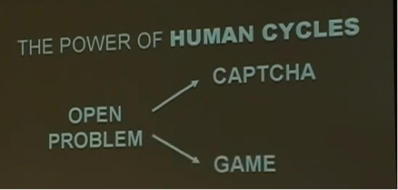

harvesting otherwise wasted “human brain cycles”

Google TechTalk ft. Luis von Ahn, July 26 2006: video
von Ahn’s “human algorithm games”
speedrunning CAPTCHA scheme design history
from intrinsic differences in human v. machine perception
to evaluation based on other users’ performance
from realist (1990s) paradigm
to relational (≈ 2003) cybersecurity (Brian Justie, 2020)
fraud driving tech change & development